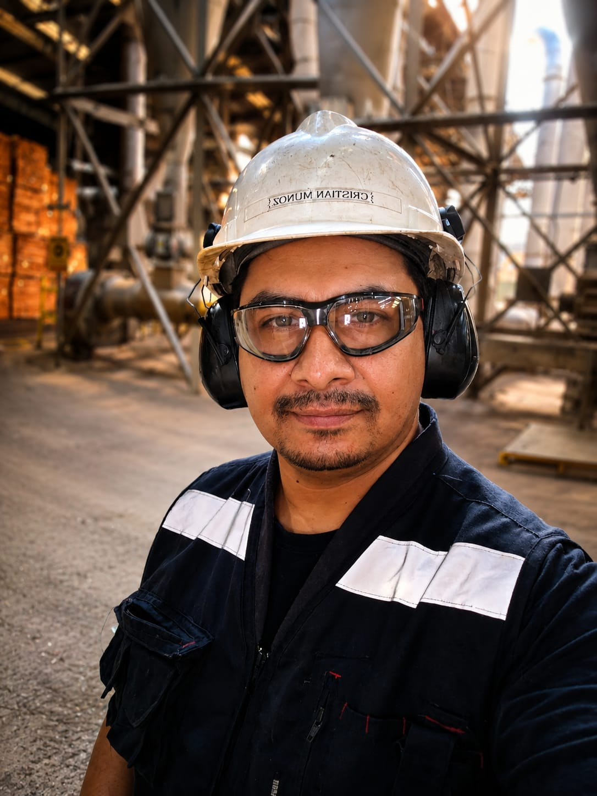

Switch Turbo Monitor: hacer comprensible el rendimiento en Fedora
De un interruptor para Turbo Boost a un centro de control para energía, recursos y diagnóstico del sistema.
Leer publicaciónIngeniería aplicada · Linux · IA
PunchiSoft conecta experiencia en mantenimiento industrial con Linux, Fedora, inteligencia artificial y desarrollo de software para crear herramientas técnicas nacidas de necesidades observadas en terreno.
Temas
Notas prácticas, experiencias y proyectos explicados con calma.
Terminal, sistemas, automatización y cultura de software libre.
Ver artículos →Configuración, optimización y guías para el uso diario.
Ver artículos →Modelos locales, flujos creativos y desarrollo asistido.
Ver artículos →Herramientas propias creadas para resolver problemas concretos.
Ver proyectos →De un interruptor para Turbo Boost a un centro de control para energía, recursos y diagnóstico del sistema.
Leer publicaciónAcerca de

PunchiSoft nace en el punto donde se encuentran el mantenimiento industrial, el análisis de sistemas y la curiosidad por construir mejores herramientas.
Mi formación reúne conocimientos de maquinaria, sistemas mecánicos, análisis técnico y mejora de procesos. Traslado esa forma de observar problemas al trabajo con Linux, programación e inteligencia artificial: entender primero el sistema y desarrollar después una solución clara y útil.
PunchiSoft es mi espacio independiente para documentar ese cruce entre industria y tecnología: los resultados, las decisiones y también lo aprendido durante el proceso.